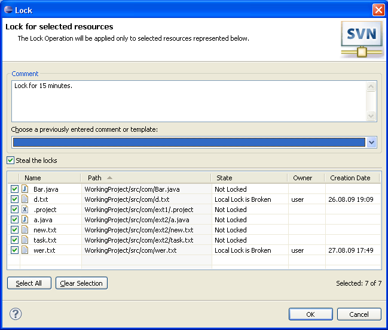

|
|
|
Locks are generally used while editing some resources which are hardly merged (ex. picture). When some user locks the resource the others are not permitted to commit it until the lock is broken or stolen. For more information on locks refer to SVN book.
|
Note: |
This facility is convenient when the developers use the 'Lock-Modify-Unlock Solution' model. If the 'Copy-Modify-Merge Solution' model is used the user has no necessity to utilize this feature. |
To lock or unlock resource the user should click on 'Team>Lock' ('Team>Unlock') of resource pop-up menu item or 'Lock' ('Unlock') items of the 'SVN main menu group'. While locking the dialog opens to provide a probability to enter lock comment.
This is how the 'Lock Dialog' looks like:
